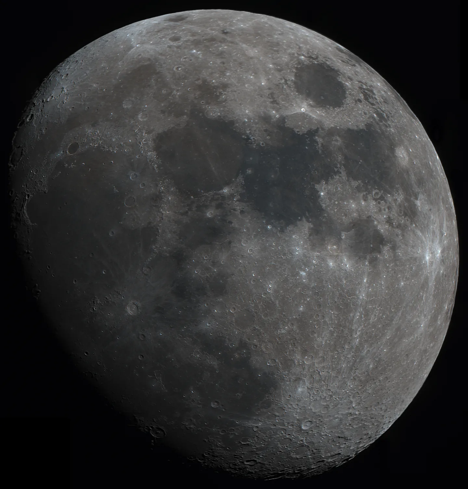
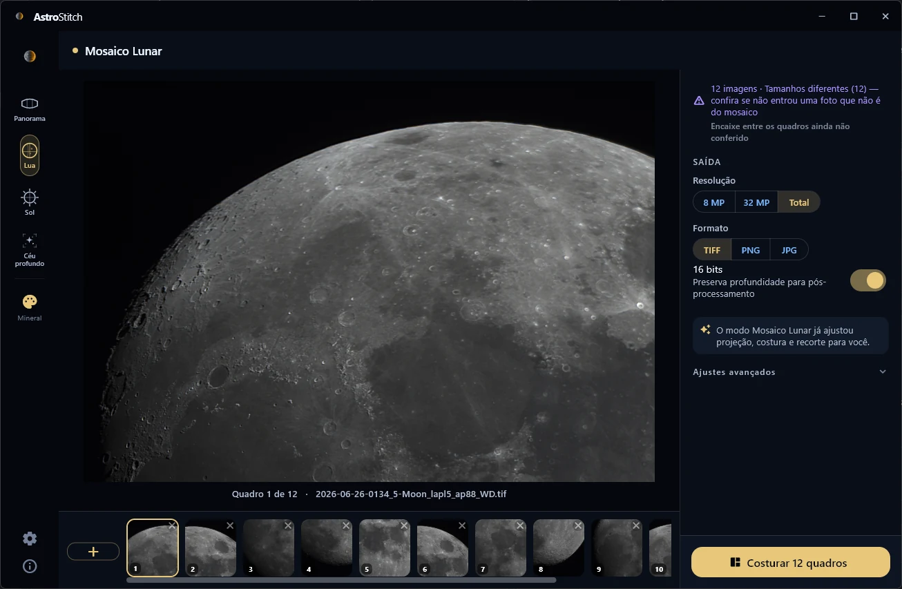
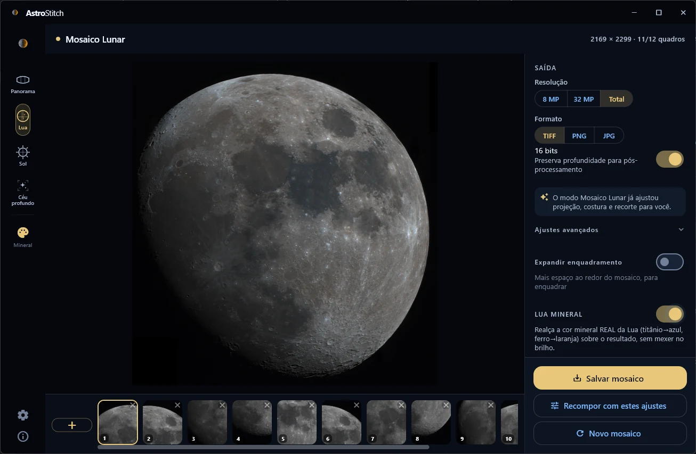
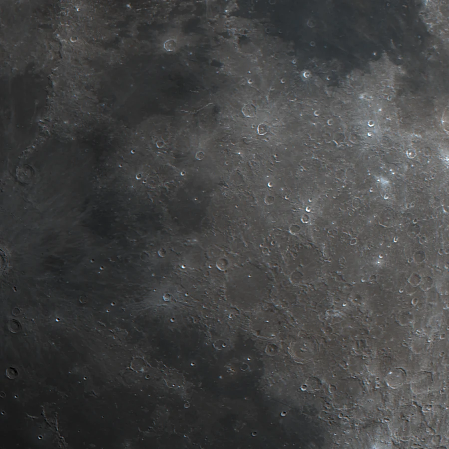
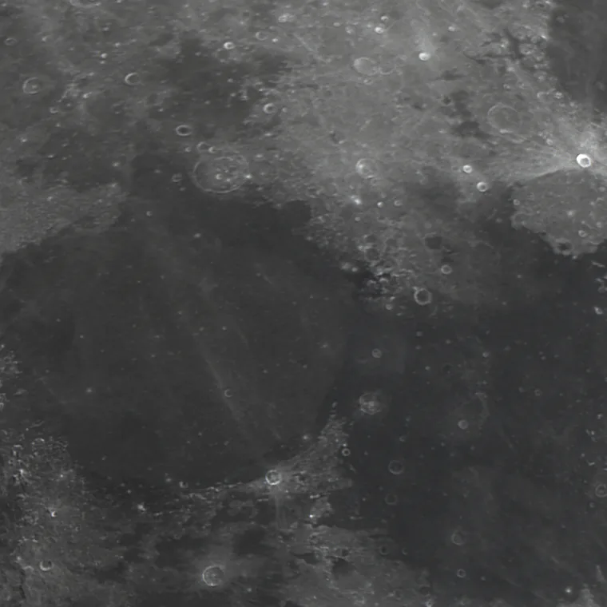
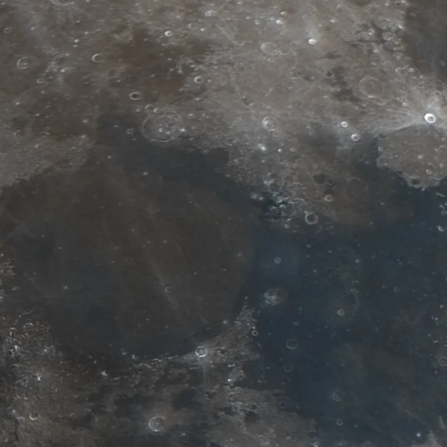
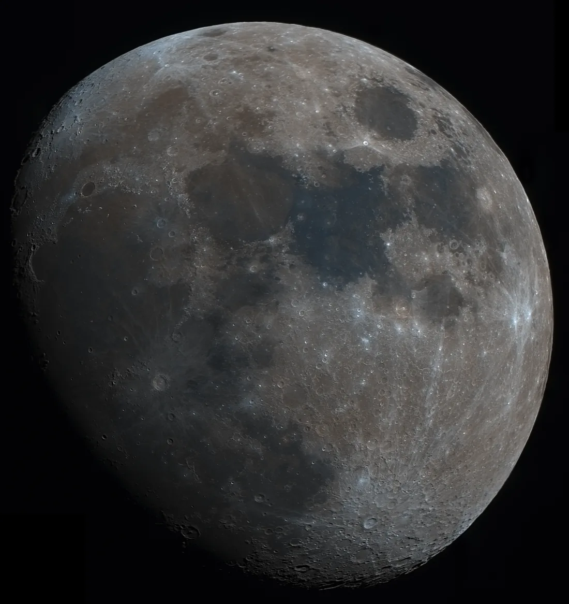

Una seus painéis
em um mosaico.
Mosaicos de Lua, Sol, céu profundo e panoramas, montados a partir das suas capturas. O processamento acontece no seu aparelho — as fotos não saem dele.
Versão 0.56.2 para Windows · o que mudou

Como se usa
Você escolhe os painéis. O app alinha e compõe.
Sem camadas, sem máscaras, sem passo a passo de edição. O modo escolhido já ajusta projeção, costura e recorte — e o que você vê na tela é o que sai no arquivo.



Detalhe do mosaico
O detalhe que a vista geral esconde.
Um recorte de 900 × 900 pixels do arquivo exportado — o mosaico inteiro tem 2169 × 2299 — redimensionado aqui para caber na página.
A costura não mora na foto inteira — mora aqui, onde dois painéis se encontram e o relevo precisa continuar de um para o outro.
Lua Mineral
A cor já estava lá.
A Lua não é cinza. O solo muda de química de uma região para a outra, e isso muda a cor: basalto com muito titânio reflete mais para o azul, solo rico em ferro puxa para o laranja. A sua câmera registra essa diferença — ela é só fraca demais para o olho achar sozinho.
A Lua Mineral amplia o que já está no arquivo, sem mexer no brilho e sem inventar cor. Abaixo, o mesmo recorte do mesmo mosaico: à esquerda como saiu da costura, à direita com vibração em 70% e redução de ruído de cor no máximo.


Medido no disco, entre as duas saídas acima: a saturação média sobe de 1,31% para 6,35% — 4,9×. O brilho não foi tocado.

Quatro assuntos
Cada um com a sua geometria.
-
Lua
Disco inteiro ou close-up. Reconhece o contorno do limbo ângulo a ângulo, em vez de recortar por uma elipse com folga.
-
Sol
Mesma geometria de disco da Lua, com o tratamento de borda que a granulação solar pede.
-
Céu profundo
Alinhamento por estrelas e equalização fotométrica entre painéis, para o fundo de céu não dar degrau.
-
Panorama
Paisagem terrestre, com projeção esférica ou plana conforme o fechamento de laço medido nos seus painéis.
Atualização mais recente
v0.56.2 — Redução do degrau no limbo da Lua
-
Degrau no limbo quase eliminado. Em mosaicos com muitos painéis, a borda do disco podia dar um salto bem na emenda entre dois deles.
No conjunto de teste, o salto caiu de 11,7 para 1,5 pixel.
-
Mais disco aproveitado. Com os painéis caindo no lugar certo, o contorno da Lua é reconhecido na volta inteira em vez de em pedaços.
Num mosaico de celular com 16 painéis, a cobertura da borda subiu de 47% para 64%.
Baixar
Escolha a sua plataforma.
Windows
Grátis, sem instalador
Descompacte e abra. Compõe em resolução total, com saída em TIFF de 16 bits para você continuar editando onde preferir.
- versão0.56.2
- arquiteturax64
- tamanho36,6 MB
Android
Aplicativo pago, na Google Play
O mesmo motor de costura no celular ou no tablet, com as fotos processadas no próprio aparelho.
- requerAndroid 7.0
- atualizaçãopela loja
Apoie o projeto
A versão para Windows é gratuita.
Ela continua assim.
Sem anúncio, sem conta, sem telemetria. Não há servidor para pagar: o app roda inteiro na sua máquina e as suas fotos não saem dela — por isso não existe plano, nem assinatura, nem nada para vender depois.
O que custa é o tempo. Cada correção nas notas de versão só entra depois de medida em um conjunto de teste, e é a medição — não o código — que leva os dias. É assim que o degrau no limbo saiu de 11,7 para 1,5 pixel em vez de só parecer melhor.
Se o AstroStitch te poupou uma noite de trabalho, uma doação paga a próxima correção.
Doar pelo PayPal Você escolhe o valor · sem recorrência